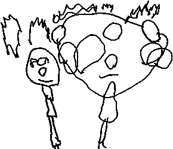

This is a test document with various text styles in it that I use for testing conversion to the Sony eBook reader.
This is "Times New Roman"
This is "Arial"
This is "Courier New"
This is one size smaller.
This is one size larger.
This is 8pt.
This is 16pt.
This is strong text.
This is bold text.
This is emphasis text.
This is italic text.
This is bolditalic text.
This is underlined text.
The next line is centered with a paragraph style:
This is centered
And this text with the <center> tag:
This is some left justified text:
“At the same time,” he remarked after a pause, during which he had sat puffing at his long pipe and gazing down into the fire, “you can hardly be open to a charge of sensationalism, for out of these cases which you have been so kind as to interest yourself in, a fair proportion do not treat of crime, in its legal sense, at all. The small matter in which I endeavoured to help the King of Bohemia, the singular experience of Miss Mary Sutherland, the problem connected with the man with the twisted lip, and the incident of the noble bachelor, were all matters which are outside the pale of the law. But in avoiding the sensational, I fear that you may have bordered on the trivial.”
This is some fully justified text:
“At the same time,” he remarked after a pause, during which he had sat puffing at his long pipe and gazing down into the fire, “you can hardly be open to a charge of sensationalism, for out of these cases which you have been so kind as to interest yourself in, a fair proportion do not treat of crime, in its legal sense, at all. The small matter in which I endeavoured to help the King of Bohemia, the singular experience of Miss Mary Sutherland, the problem connected with the man with the twisted lip, and the incident of the noble bachelor, were all matters which are outside the pale of the law. But in avoiding the sensational, I fear that you may have bordered on the trivial.”
Left Margin
This is block quoted text that should be indented a little bit from the left side of the page. Usually this is about 0.5", but should probably be less on the Sony reader.
Again on the left margin.
A link outside of this document to CNN.
A link below to the long chapter.
A link above to the introduction.
Trademark: ™
Copyright: ©
Registered: ®
Superscript: e=mc2
Subscript: log10(x)
"Ég sleppi þér aldrei" by Jóhann Jóhannsson."
Here are some “double smart quotes”.
Here are some ‘single smart quotes’.
The reader contains three fonts: Swis721, Dutch801, and Courier10. The don't contain all of the characters that other Windows fonts do. For these characters we substitute them with the best equivalent.
Latin small letter 'a' with breve: ă.
Here is a centered 3x3 table with a 1 pixel border:
| Column A | Column B | Column C |
|---|---|---|
| A1 | B1 | C1 |
| A2 | B2 | C2 |
| A3 | B3 | C3 |
A horizontal line follows:
Here's one that is 50% the width of the page (left justified):
This is a 400x300 full color JPEG image that is centered (with 1 pixel border):
This is a 400x300 256 color GIF image that is centered (with 3 pixel border):
"Hiding from the beach" by Jyothi Karthik Raja
This is a 290x249 2 color GIF image that is centered (without a border):

"Jack and Daddy" by Jack Mumford
Copyright laws are changing all over the world. Be sure to check the copyright laws for your country before downloading or redistributing this or any other Project Gutenberg eBook. This header should be the first thing seen when viewing this Project Gutenberg file. Please do not remove it. Do not change or edit the header without written permission. Please read the "legal small print," and other information about the eBook and Project Gutenberg at the bottom of this file. Included is important information about your specific rights and restrictions in how the file may be used. You can also find out about how to make a donation to Project Gutenberg, and how to get involved. **Welcome To The World of Free Plain Vanilla Electronic Texts** **eBooks Readable By Both Humans and By Computers, Since 1971** *****These eBooks Were Prepared By Thousands of Volunteers!***** Title: The Adventures of Sherlock Holmes Author: Sir Arthur Conan Doyle Release Date: March, 1999 [EBook #1661] [Most recently updated: November 29, 2002] Edition: 12 Language: English Character set encoding: ASCII *** START OF THE PROJECT GUTENBERG EBOOK, THE ADVENTURES OF SHERLOCK HOLMES *** (Additional editing by Jose Menendez)
“To the man who loves art for its own sake,” remarked Sherlock Holmes, tossing aside the advertisement sheet of the Daily Telegraph, “it is frequently in its least important and lowliest manifestations that the keenest pleasure is to be derived. It is pleasant to me to observe, Watson, that you have so far grasped this truth that in these little records of our cases which you have been good enough to draw up, and, I am bound to say, occasionally to embellish, you have given prominence not so much to the many causes célèbres and sensational trials in which I have figured but rather to those incidents which may have been trivial in themselves, but which have given room for those faculties of deduction and of logical synthesis which I have made my special province.”
“And yet,” said I, smiling, “I cannot quite hold myself absolved from the charge of sensationalism which has been urged against my records.”
“You have erred, perhaps,” he observed, taking up a glowing cinder with the tongs and lighting with it the long cherry-wood pipe which was wont to replace his clay when he was in a disputatious rather than a meditative mood—“you have erred perhaps in attempting to put colour and life into each of your statements instead of confining yourself to the task of placing upon record that severe reasoning from cause to effect which is really the only notable feature about the thing.”
“It seems to me that I have done you full justice in the matter,” I remarked with some coldness, for I was repelled by the egotism which I had more than once observed to be a strong factor in my friend’s singular character.
“No, it is not selfishness or conceit,” said he, answering, as was his wont, my thoughts rather than my words. “If I claim full justice for my art, it is because it is an impersonal thing—a thing beyond myself. Crime is common. Logic is rare. Therefore it is upon the logic rather than upon the crime that you should dwell. You have degraded what should have been a course of lectures into a series of tales.”
It was a cold morning of the early spring, and we sat after breakfast on either side of a cheery fire in the old room at Baker Street. A thick fog rolled down between the lines of dun-coloured houses, and the opposing windows loomed like dark, shapeless blurs through the heavy yellow wreaths. Our gas was lit and shone on the white cloth and glimmer of china and metal, for the table had not been cleared yet. Sherlock Holmes had been silent all the morning, dipping continuously into the advertisement columns of a succession of papers until at last, having apparently given up his search, he had emerged in no very sweet temper to lecture me upon my literary shortcomings.
“At the same time,” he remarked after a pause, during which he had sat puffing at his long pipe and gazing down into the fire, “you can hardly be open to a charge of sensationalism, for out of these cases which you have been so kind as to interest yourself in, a fair proportion do not treat of crime, in its legal sense, at all. The small matter in which I endeavoured to help the King of Bohemia, the singular experience of Miss Mary Sutherland, the problem connected with the man with the twisted lip, and the incident of the noble bachelor, were all matters which are outside the pale of the law. But in avoiding the sensational, I fear that you may have bordered on the trivial.”